<!DOCTYPE html>


<html lang="en">
  

    <head>
      <meta charset="utf-8" />
        
      <meta
        name="viewport"
        content="width=device-width, initial-scale=1, maximum-scale=1"
      />
      <title>基础知识 |  Scorpio</title>
  <meta name="generator" content="hexo-theme-ayer">
      
      <link rel="shortcut icon" href="/favicon.ico" />
       
<link rel="stylesheet" href="/dist/main.css">

      <link
        rel="stylesheet"
        href="https://cdn.jsdelivr.net/gh/Shen-Yu/cdn/css/remixicon.min.css"
      />
      
<link rel="stylesheet" href="/css/custom.css">
 
      <script src="https://cdn.jsdelivr.net/npm/pace-js@1.0.2/pace.min.js"></script>
       
 

      <link
        rel="stylesheet"
        href="https://cdn.jsdelivr.net/npm/@sweetalert2/theme-bulma@5.0.1/bulma.min.css"
      />
      <script src="https://cdn.jsdelivr.net/npm/sweetalert2@11.0.19/dist/sweetalert2.min.js"></script>

      <!-- mermaid -->
      
      <style>
        .swal2-styled.swal2-confirm {
          font-size: 1.6rem;
        }
      </style>
    </head>
  </html>
</html>


<body>
  <div id="app">
    
      
      <canvas width="1777" height="841"
        style="position: fixed; left: 0px; top: 0px; z-index: 99999; pointer-events: none;"></canvas>
      
    <main class="content on">
      <section class="outer">
  <article
  id="post-基础知识"
  class="article article-type-post"
  itemscope
  itemprop="blogPost"
  data-scroll-reveal
>
  <div class="article-inner">
    
    <header class="article-header">
       
<h1 class="article-title sea-center" style="border-left:0" itemprop="name">
  基础知识
</h1>
 

      
    </header>
     
    <div class="article-meta">
      <a href="/2021/07/13/%E5%9F%BA%E7%A1%80%E7%9F%A5%E8%AF%86/" class="article-date">
  <time datetime="2021-07-13T14:40:52.000Z" itemprop="datePublished">2021-07-13</time>
</a> 
  <div class="article-category">
    <a class="article-category-link" href="/categories/%E6%93%8D%E4%BD%9C%E7%B3%BB%E7%BB%9F/">操作系统</a>
  </div>
  
<div class="word_count">
    <span class="post-time">
        <span class="post-meta-item-icon">
            <i class="ri-quill-pen-line"></i>
            <span class="post-meta-item-text"> Word count:</span>
            <span class="post-count">4.2k</span>
        </span>
    </span>

    <span class="post-time">
        &nbsp; | &nbsp;
        <span class="post-meta-item-icon">
            <i class="ri-book-open-line"></i>
            <span class="post-meta-item-text"> Reading time≈</span>
            <span class="post-count">16 min</span>
        </span>
    </span>
</div>
 
    </div>
      
    <div class="tocbot"></div>


  
    <div class="article-entry" itemprop="articleBody">
       
  <h2 id="什么是操作系统？"><a href="#什么是操作系统？" class="headerlink" title="什么是操作系统？"></a>什么是操作系统？</h2><p>只有计算机硬件的东西叫裸机。</p>
<p>在计算机硬件和应用之间的一层软件就是操作系统。</p>
<ul>
<li>方便我们使用硬件</li>
<li>高效的使用硬件</li>
</ul>
<p>操作系统管理这些硬件</p>
<ul>
<li><strong>CPU管理</strong></li>
<li><strong>内存管理</strong></li>
<li><strong>终端管理</strong></li>
<li><strong>磁盘管理</strong></li>
<li><strong>文件管理</strong></li>
<li>网络管理</li>
<li>电源管理</li>
<li>多核管理</li>
</ul>
<span id="more"></span>

<h3 id="学习操作系统可以有很多层次"><a href="#学习操作系统可以有很多层次" class="headerlink" title="学习操作系统可以有很多层次"></a>学习操作系统可以有很多层次</h3><ul>
<li>从应用软件出发“探到操作系统”<ul>
<li>集中在使用计算机的接口上</li>
<li>使用显示器：printf；使用CPU：fork，使用文件：open、read……</li>
</ul>
</li>
<li>从应用软件触发“进入操作系统”<ul>
<li>一段文字是如何写到磁盘上的…</li>
</ul>
</li>
<li>从硬件触发“设计并实现操作系统”<ul>
<li>给一个板子，配一个操作系统</li>
</ul>
</li>
</ul>
<h2 id="揭开钢琴的盖子"><a href="#揭开钢琴的盖子" class="headerlink" title="揭开钢琴的盖子"></a>揭开钢琴的盖子</h2><h3 id="从图灵机到通用图灵机"><a href="#从图灵机到通用图灵机" class="headerlink" title="从图灵机到通用图灵机"></a>从图灵机到通用图灵机</h3><p>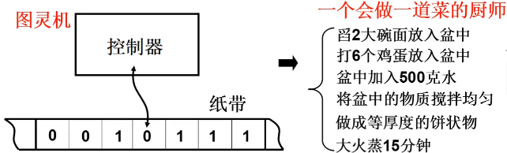</p>
<p>图灵机只能做一件事，就像一个只会做一道菜的厨师。</p>
<p></p>
<p>通用图灵机可以进行编程了，就如同给厨师不同的菜谱可以做出不同的菜。</p>
<h3 id="从通用图灵机到计算机"><a href="#从通用图灵机到计算机" class="headerlink" title="从通用图灵机到计算机"></a>从通用图灵机到计算机</h3><ul>
<li>伟大想法的工程实现<ul>
<li>冯诺依曼存储程序思想（1946年提出）</li>
<li>主要思想：将程序和数据放在计算机内部的存储器中，计算机在程序控制下一步一步进行处理</li>
<li>计算机由五大部件组成：输入设备、输出设备、存储器、运算器、控制器。</li>
</ul>
</li>
</ul>
<h3 id="打开电源，计算机执行的第一条指令是什么？"><a href="#打开电源，计算机执行的第一条指令是什么？" class="headerlink" title="打开电源，计算机执行的第一条指令是什么？"></a>打开电源，计算机执行的第一条指令是什么？</h3><ul>
<li><p>计算模型=&gt;我们要关注指针IP及其指向的内容</p>
<ul>
<li>计算机刚打开电源时，IP=？</li>
<li>由硬件设计者决定！</li>
</ul>
</li>
<li><p>看x86 PC</p>
<ol>
<li><p>x86刚开机时CPU处于实模式。</p>
<p>实模式和保护模式对应，实模式的寻址CS:IP(CS左移4位+IP)，和保护模式不同。</p>
</li>
<li><p>开机时，CS=0xFFFF；IP=0x0000</p>
</li>
<li><p>寻址0xFFFF0(ROM BIOS映射区)</p>
</li>
<li><p>检查RAM，键盘，显示器，软硬磁盘，主板……</p>
</li>
<li><p>将磁盘0磁道0扇区（MBR）读入0x7c00处（一个扇区524字节）</p>
</li>
<li><p>设置CS=0x07c0,IP=0x0000</p>
</li>
</ol>
</li>
</ul>
<h3 id="0x7c00处存放的代码"><a href="#0x7c00处存放的代码" class="headerlink" title="0x7c00处存放的代码"></a>0x7c00处存放的代码</h3><ul>
<li>就是从磁盘引导扇区读入的那512字节<ul>
<li>引导扇区就是启动设备的第一个扇区（开机时按住del健可进入启动设备设置界面，可以设置为光盘启动）</li>
<li>启动设备信息被设置在CMOS中…（CMOS：互补金属氧化物半导体。用来存储时钟和硬件配置信息）</li>
<li>因此，硬盘的第一个扇区上存放着开机后执行的第一段我们可以控制的程序</li>
<li>操作系统的故事从这里开始</li>
</ul>
</li>
</ul>
<h3 id="引导扇区代码：bootsect-s"><a href="#引导扇区代码：bootsect-s" class="headerlink" title="引导扇区代码：bootsect.s"></a>引导扇区代码：bootsect.s</h3><figure class="highlight plaintext"><table><tr><td class="gutter"><pre><span class="line">1</span><br><span class="line">2</span><br><span class="line">3</span><br><span class="line">4</span><br><span class="line">5</span><br><span class="line">6</span><br><span class="line">7</span><br><span class="line">8</span><br><span class="line">9</span><br><span class="line">10</span><br><span class="line">11</span><br><span class="line">12</span><br><span class="line">13</span><br><span class="line">14</span><br><span class="line">15</span><br><span class="line">16</span><br><span class="line">17</span><br><span class="line">18</span><br><span class="line">19</span><br><span class="line">20</span><br><span class="line">21</span><br><span class="line">22</span><br><span class="line">23</span><br><span class="line">24</span><br><span class="line">25</span><br><span class="line">26</span><br><span class="line">27</span><br><span class="line">28</span><br><span class="line">29</span><br><span class="line">30</span><br><span class="line">31</span><br><span class="line">32</span><br><span class="line">33</span><br><span class="line">34</span><br><span class="line">35</span><br><span class="line">36</span><br><span class="line">37</span><br><span class="line">38</span><br><span class="line">39</span><br><span class="line">40</span><br><span class="line">41</span><br><span class="line">42</span><br><span class="line">43</span><br><span class="line">44</span><br><span class="line">45</span><br><span class="line">46</span><br><span class="line">47</span><br><span class="line">48</span><br><span class="line">49</span><br><span class="line">50</span><br><span class="line">51</span><br><span class="line">52</span><br><span class="line">53</span><br><span class="line">54</span><br><span class="line">55</span><br><span class="line">56</span><br><span class="line">57</span><br><span class="line">58</span><br><span class="line">59</span><br><span class="line">60</span><br><span class="line">61</span><br><span class="line">62</span><br><span class="line">63</span><br><span class="line">64</span><br><span class="line">65</span><br></pre></td><td class="code"><pre><span class="line">.globl begtext,begdata,begbss,endtext,enddata,endbss</span><br><span class="line">.text	//文本段</span><br><span class="line">begtext:</span><br><span class="line">.data	//数据段</span><br><span class="line">begdata:</span><br><span class="line">.bss	//为初始化数据段</span><br><span class="line">begbss:</span><br><span class="line">entry start	//关键字entry告诉链接器“程序入口”</span><br><span class="line">start:</span><br><span class="line">	mov ax.#BOOTSEG</span><br><span class="line">	//0x07c0,启动代码所在位置放入ax</span><br><span class="line">	mov ds,ax</span><br><span class="line">	//将启动代码与ds寄存器关联</span><br><span class="line">	mov ax.#INITSEG</span><br><span class="line">	//启动代码要被复制到的目的地址</span><br><span class="line">	mov es,ax</span><br><span class="line">	//将目的地址与es寄存器关联</span><br><span class="line">	mov cx,#256</span><br><span class="line">	</span><br><span class="line">	sub si,si</span><br><span class="line">	sub di,di</span><br><span class="line">	//si清零,ds:si即0x07c00</span><br><span class="line">	//di清零,es:di即0x90000</span><br><span class="line">	rep</span><br><span class="line">	//循环移动cx（256）个字,512字节</span><br><span class="line">	//将0x07c0 : 0x0000处的256个字移到0x9000 : 0x0000处</span><br><span class="line">	movw</span><br><span class="line">	jmpi go,INITSEG	//CS=INITSEG	IP=go</span><br><span class="line">	//jmpi 段间跳转</span><br><span class="line">/*</span><br><span class="line">SETUPLEN = 4	nomber of setup-sectors</span><br><span class="line">BOOTSEG  = 0x07c0	original address of boot-sector</span><br><span class="line">INITSEG  = 0x9000	we move boot here - out of the way</span><br><span class="line">SETUPSEG = 0x9020	setup starts here</span><br><span class="line">SYSSEG   = 0x1000	system loaded at 0x10000 (65536).</span><br><span class="line">ENDSEG   = SYSSEG + SYSSIZE	where to stop loading</span><br><span class="line">*/</span><br><span class="line">//由于启动代码复制到了新位置，需要更改相应寄存器的值</span><br><span class="line">go:	mov ax,cs	</span><br><span class="line">	//cs=0x9000</span><br><span class="line">	mov ds,ax </span><br><span class="line">	mov	es,ax</span><br><span class="line">	mov ss,ax</span><br><span class="line">	//开始引入栈</span><br><span class="line">	mov sp,#0xff00</span><br><span class="line">	//为call做准备，栈空间为0x9ff00</span><br><span class="line">//开始加载setup块</span><br><span class="line">load_setup:	//载入setup模块</span><br><span class="line">	mov	dx,#0x0000</span><br><span class="line">	//设置驱动器和磁头(drive 0, head 0): 软盘 0 磁头 </span><br><span class="line">	mov cx,#0x0002</span><br><span class="line">	//设置扇区号和磁道(sector 2, track 0): 0 磁头、0 磁道、2 扇区</span><br><span class="line">	mov bx,#0x0200</span><br><span class="line">	//设置读入的内存地址：BOOTSEG+address = 512，偏移512字节</span><br><span class="line">	mov ax,#0x0200+SETUPLEN</span><br><span class="line">	//SETUPLEN是读入的扇区个数，Linux 0.11 设置的是 4</span><br><span class="line">	int 0x13	</span><br><span class="line">	//BIOS中断,将setup.s对应的程序加载至内存指定地址</span><br><span class="line">	jnc ok_load_setup</span><br><span class="line">	//cf标志寄存器为0就跳转至ok_load_setup块   </span><br><span class="line">	mov dx,#0x0000</span><br><span class="line">	mov ax,#0x0000</span><br><span class="line">	int 0x13</span><br><span class="line">	//复位,cf!=０则重新设置传入信息,进入中断 </span><br><span class="line">	j	load_setup	//重读</span><br></pre></td></tr></table></figure>

<p></p>
<ul>
<li>0x13是BIOS读磁盘扇区的中断：<ul>
<li>ah=0x02    读磁盘</li>
<li>al=扇区数量（SETUPLEN=4）</li>
<li>ch=柱面号</li>
<li>cl=开始扇区（0x02，第二个扇区，因为第一个扇区boot扇区）</li>
<li>dh=磁头号</li>
<li>dl=驱动器号</li>
<li>es（0x9000）:bx（0x0200）=内存地址(0x90200)</li>
</ul>
</li>
</ul>
<figure class="highlight plaintext"><table><tr><td class="gutter"><pre><span class="line">1</span><br><span class="line">2</span><br><span class="line">3</span><br><span class="line">4</span><br><span class="line">5</span><br><span class="line">6</span><br><span class="line">7</span><br><span class="line">8</span><br><span class="line">9</span><br><span class="line">10</span><br><span class="line">11</span><br><span class="line">12</span><br><span class="line">13</span><br><span class="line">14</span><br><span class="line">15</span><br><span class="line">16</span><br><span class="line">17</span><br><span class="line">18</span><br><span class="line">19</span><br><span class="line">20</span><br><span class="line">21</span><br><span class="line">22</span><br><span class="line">23</span><br><span class="line">24</span><br><span class="line">25</span><br><span class="line">26</span><br><span class="line">27</span><br><span class="line">28</span><br><span class="line">29</span><br><span class="line">30</span><br><span class="line">31</span><br><span class="line">32</span><br><span class="line">33</span><br><span class="line">34</span><br><span class="line">35</span><br><span class="line">36</span><br><span class="line">37</span><br><span class="line">38</span><br><span class="line">39</span><br><span class="line">40</span><br><span class="line">41</span><br><span class="line">42</span><br><span class="line">43</span><br><span class="line">44</span><br><span class="line">45</span><br><span class="line">46</span><br></pre></td><td class="code"><pre><span class="line">ok_load_setup:	//载入setup模块</span><br><span class="line">	mov dl,#0x00</span><br><span class="line">	mov ax,#0x0800</span><br><span class="line">	//ah=0x08获得磁盘参数</span><br><span class="line">	int 0x13</span><br><span class="line">	mov ch，#0x00</span><br><span class="line">	mov sectors，cx</span><br><span class="line">	//保存每磁道扇区数</span><br><span class="line">	mov ah，#0x03</span><br><span class="line">	//读光标位置</span><br><span class="line">	xor bh,bh</span><br><span class="line">	int 0x10</span><br><span class="line">	mov cx,#24</span><br><span class="line">	//要显示24个字符</span><br><span class="line">	mov bx,#0x0007</span><br><span class="line">	//7是显示属性</span><br><span class="line">	</span><br><span class="line">	mov bp，#msg1</span><br><span class="line">	mov ax，#1301</span><br><span class="line">	int 0x10	//显示字符</span><br><span class="line">	//将msg1的字符显示到光标位置</span><br><span class="line">	/*</span><br><span class="line">	bootsect.s中的数据，在文件末尾</span><br><span class="line">	.sectors: .word 0	//磁道扇区数</span><br><span class="line">	msg1:.byte 13,10</span><br><span class="line">		 .ascii &quot;Loading system...&quot;</span><br><span class="line">		 .byte 13,10,13,10</span><br><span class="line">	*/</span><br><span class="line">	mov    ax,#SYSSEG    </span><br><span class="line">	//内核代码被加载到的地址</span><br><span class="line">	mov es,ax</span><br><span class="line">	call read_it	//读入system模块</span><br><span class="line">	jumpi 0，SETUPSEG</span><br><span class="line">	//转入0x9020 : 0x0000执行setup.s</span><br><span class="line">read_it:</span><br><span class="line">	mov ax,es</span><br><span class="line">	cmp ax,#ENDSEG</span><br><span class="line">	//system模块很大，要跨越磁道！</span><br><span class="line">	//ENDSEG=SYSSEG+SYSSIZE</span><br><span class="line">	//SYSSIZE=0x8000(该变量可根据Image大小设定)</span><br><span class="line">	jb ok1_read</span><br><span class="line">	ret</span><br><span class="line">ok1_read:</span><br><span class="line">	mov ax,sectors</span><br><span class="line">	sub ax,sread	//sread是当前磁道已读扇区数，ax未读扇区数</span><br><span class="line">	call read_track	//读磁道...</span><br></pre></td></tr></table></figure>

<p>引导扇区的末尾//BIOS用以识别引导扇区</p>
<figure class="highlight plaintext"><table><tr><td class="gutter"><pre><span class="line">1</span><br><span class="line">2</span><br></pre></td><td class="code"><pre><span class="line">.org 510</span><br><span class="line">	.word 0xAA55 //扇区的最后两个字节</span><br></pre></td></tr></table></figure>

<p>可以转入setup执行了，jmpi 0，SETUPSEG</p>
<h2 id="操作系统启动"><a href="#操作系统启动" class="headerlink" title="操作系统启动"></a>操作系统启动</h2><h3 id="setup模块，即setup-s"><a href="#setup模块，即setup-s" class="headerlink" title="setup模块，即setup.s"></a>setup模块，即setup.s</h3><figure class="highlight plaintext"><table><tr><td class="gutter"><pre><span class="line">1</span><br><span class="line">2</span><br><span class="line">3</span><br><span class="line">4</span><br><span class="line">5</span><br><span class="line">6</span><br><span class="line">7</span><br><span class="line">8</span><br><span class="line">9</span><br><span class="line">10</span><br><span class="line">11</span><br><span class="line">12</span><br><span class="line">13</span><br><span class="line">14</span><br><span class="line">15</span><br><span class="line">16</span><br><span class="line">17</span><br><span class="line">18</span><br><span class="line">19</span><br><span class="line">20</span><br><span class="line">21</span><br><span class="line">22</span><br><span class="line">23</span><br><span class="line">24</span><br><span class="line">25</span><br><span class="line">26</span><br><span class="line">27</span><br><span class="line">28</span><br><span class="line">29</span><br><span class="line">30</span><br></pre></td><td class="code"><pre><span class="line">start:</span><br><span class="line">	mov ax,#INITSEG</span><br><span class="line">	mov ds,ax</span><br><span class="line">	mov ah,#0x03</span><br><span class="line">	//获取光标位置</span><br><span class="line">	xor bh,bh</span><br><span class="line">	//bh=页号=0（输入）</span><br><span class="line">	int 0x10</span><br><span class="line">	//输出： DH=行号，DL=列号</span><br><span class="line">	mov [0],dx</span><br><span class="line">	mov ah,#0x88</span><br><span class="line">	int 0x15</span><br><span class="line">	//获取内存大小</span><br><span class="line">	mov [2],ax</span><br><span class="line">	cli	//不允许中断</span><br><span class="line">	mov ah,#0x0000</span><br><span class="line">	//保存光标的行号和列号到 0x90000，共占2字节</span><br><span class="line">	cld</span><br><span class="line">do_move:</span><br><span class="line">	mov es,ax</span><br><span class="line">	add ax,#0x1000</span><br><span class="line">	cmp ax,#0x9000</span><br><span class="line">	jz	end_move</span><br><span class="line">	mov	ds,ax</span><br><span class="line">	sub	di,di</span><br><span class="line">	sub si,si</span><br><span class="line">	mov	cx,#0x8000</span><br><span class="line">	rep</span><br><span class="line">	movsw</span><br><span class="line">	jmp	do_move</span><br></pre></td></tr></table></figure>

<p>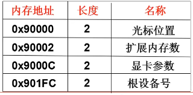</p>
<figure class="highlight c"><table><tr><td class="gutter"><pre><span class="line">1</span><br><span class="line">2</span><br><span class="line">3</span><br><span class="line">4</span><br><span class="line">5</span><br><span class="line">6</span><br><span class="line">7</span><br><span class="line">8</span><br><span class="line">9</span><br><span class="line">10</span><br><span class="line">11</span><br><span class="line">12</span><br><span class="line">13</span><br><span class="line">14</span><br><span class="line">15</span><br><span class="line">16</span><br><span class="line">17</span><br></pre></td><td class="code"><pre><span class="line">do_move的C翻译:</span><br><span class="line"></span><br><span class="line">ax = <span class="number">0</span>;</span><br><span class="line">cld;</span><br><span class="line"><span class="keyword">while</span>(<span class="number">1</span>)&#123;</span><br><span class="line">    es = ax;</span><br><span class="line">    ax += <span class="number">0x1000</span>;</span><br><span class="line">    <span class="keyword">if</span>(ax == <span class="number">0x9000</span>)</span><br><span class="line">        <span class="keyword">break</span>;  <span class="comment">//结束移动</span></span><br><span class="line">    ds = ax;</span><br><span class="line">    di = si = <span class="number">0</span>;</span><br><span class="line">    <span class="keyword">for</span>(<span class="keyword">int</span> i=<span class="number">0</span>; i&lt;<span class="number">0x8000</span>; ++i)&#123;</span><br><span class="line">       <span class="built_in">memcpy</span>(es:di, ds:si, <span class="number">2</span>);</span><br><span class="line">       di += <span class="number">2</span>;</span><br><span class="line">       si += <span class="number">2</span>;</span><br><span class="line">    &#125;</span><br><span class="line">&#125;</span><br></pre></td></tr></table></figure>

<h3 id="保护模式下的地址翻译和中断处理"><a href="#保护模式下的地址翻译和中断处理" class="headerlink" title="保护模式下的地址翻译和中断处理"></a>保护模式下的地址翻译和中断处理</h3><ul>
<li><p>保护模式下的地址翻译</p>
<p>即gdt（全局描述符表）的作用：</p>
<p>t是table，所以实模式下:cs左移4+ip。保护模式下：根据cs查表+ip。cs这里被称为选择子。</p>
<p>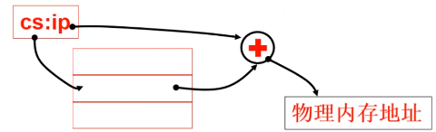</p>
</li>
<li><p>保护模式下中断函数入口</p>
<p>即idt（中断描述符表）的作用：</p>
<p>t是table，仿照gdt，通过int n的n进行查表</p>
</li>
</ul>
<p></p>
<h3 id="将setup移到0地址处"><a href="#将setup移到0地址处" class="headerlink" title="将setup移到0地址处"></a>将setup移到0地址处</h3><ul>
<li>但0地址处是有重要内容的<ul>
<li>此处存储的是中断向量表</li>
</ul>
</li>
<li>以后不调用int指令了吗？</li>
<li>因为操作系统要让硬件进入保护模式了</li>
<li>保护模式下int n和cs：ip的解释不再和实模式一样</li>
</ul>
<p>我们需要初始化这些表</p>
<figure class="highlight plaintext"><table><tr><td class="gutter"><pre><span class="line">1</span><br><span class="line">2</span><br><span class="line">3</span><br><span class="line">4</span><br><span class="line">5</span><br><span class="line">6</span><br><span class="line">7</span><br><span class="line">8</span><br><span class="line">9</span><br><span class="line">10</span><br><span class="line">11</span><br><span class="line">12</span><br><span class="line">13</span><br><span class="line">14</span><br><span class="line">15</span><br><span class="line">16</span><br></pre></td><td class="code"><pre><span class="line">end_move:</span><br><span class="line">	mov ax,#SETUPSEG</span><br><span class="line">	mov ds,ax</span><br><span class="line">	lidt idt_48</span><br><span class="line">	lgdt gdt_48</span><br><span class="line">	//设置保护模式下的中断和寻址</span><br><span class="line">idt_48:</span><br><span class="line">	.word 0</span><br><span class="line">	.word 0,0	//保护模式中断函数表</span><br><span class="line">gdt_48:</span><br><span class="line">	.word 0x800</span><br><span class="line">	.word 512+gdt,0x9</span><br><span class="line">gdt:</span><br><span class="line">	.word 0,0,0,0</span><br><span class="line">	.word 0x07FF,0x0000,9x9A00,0x00C0</span><br><span class="line">	.word 0x07FF,0x0000,9x9200,0x00C0</span><br></pre></td></tr></table></figure>

<h3 id="进入保护模式"><a href="#进入保护模式" class="headerlink" title="进入保护模式"></a>进入保护模式</h3><figure class="highlight plaintext"><table><tr><td class="gutter"><pre><span class="line">1</span><br><span class="line">2</span><br><span class="line">3</span><br><span class="line">4</span><br><span class="line">5</span><br><span class="line">6</span><br><span class="line">7</span><br><span class="line">8</span><br><span class="line">9</span><br><span class="line">10</span><br><span class="line">11</span><br><span class="line">12</span><br></pre></td><td class="code"><pre><span class="line">	call empty_8042</span><br><span class="line">//8042是键盘控制器，</span><br><span class="line">	mov	al,#0xD1</span><br><span class="line">	out #0x64,al</span><br><span class="line">	call empty_8042</span><br><span class="line">	mov al,#0xDF</span><br><span class="line">	out #0x60,al</span><br><span class="line">	call empty_8042</span><br><span class="line">	mov ax,#0x0001</span><br><span class="line">	mov cr0,ax</span><br><span class="line">	//cr0寄存器中PE=1启动保护模式，PG=1启动分页</span><br><span class="line">	jmpi 0,8</span><br></pre></td></tr></table></figure>

<p>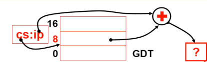</p>
<p></p>
<p></p>
<h3 id="跳到system模块执行"><a href="#跳到system模块执行" class="headerlink" title="跳到system模块执行"></a>跳到system模块执行</h3><p>system模块（目标代码）中的第一部分代码：head.s</p>
<p>system由许多文件编译而成，第一个就是head.s</p>
<p>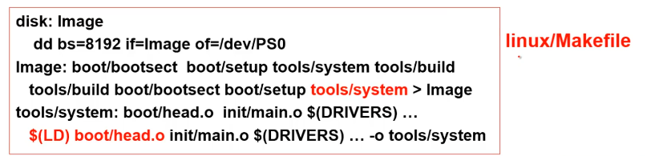</p>
<h3 id="head-s-一段在保护模式下运行的代码"><a href="#head-s-一段在保护模式下运行的代码" class="headerlink" title="head.s//一段在保护模式下运行的代码"></a>head.s//一段在保护模式下运行的代码</h3><ul>
<li>setup是进入保护模式，head是进入之后的初始化</li>
</ul>
<figure class="highlight plaintext"><table><tr><td class="gutter"><pre><span class="line">1</span><br><span class="line">2</span><br><span class="line">3</span><br><span class="line">4</span><br><span class="line">5</span><br><span class="line">6</span><br><span class="line">7</span><br><span class="line">8</span><br><span class="line">9</span><br><span class="line">10</span><br><span class="line">11</span><br><span class="line">12</span><br><span class="line">13</span><br><span class="line">14</span><br><span class="line">15</span><br><span class="line">16</span><br><span class="line">17</span><br><span class="line">18</span><br><span class="line">19</span><br><span class="line">20</span><br><span class="line">21</span><br><span class="line">22</span><br><span class="line">23</span><br><span class="line">24</span><br><span class="line">25</span><br><span class="line">26</span><br><span class="line">27</span><br></pre></td><td class="code"><pre><span class="line">stratup_32:</span><br><span class="line">	movl $0x10,%eax</span><br><span class="line">	mov %ax,%ds</span><br><span class="line">	mov %ax,%es</span><br><span class="line">	</span><br><span class="line">	mov	%as,%fs</span><br><span class="line">	mov	%as,%gs</span><br><span class="line">	//指向gdt的0x10项(数据段)</span><br><span class="line">	</span><br><span class="line">	lss _start,%esp//设置栈(系统栈)</span><br><span class="line">	call setup_idt</span><br><span class="line">	call setup_gdt</span><br><span class="line">	//设置q和GDT</span><br><span class="line">	xorl %eax,%eax</span><br><span class="line">l:</span><br><span class="line">	incl %eax</span><br><span class="line">	movl %eax,0x000000</span><br><span class="line">	cmpl %eax,0x100000</span><br><span class="line">	je 1b	//0地址和1M地址处相同（A20没开启），就死循环</span><br><span class="line">	//检测A20开启否</span><br><span class="line">	jmp	after_page_tables//页表</span><br><span class="line">setup_idt:</span><br><span class="line">	lea ignore_int,%edx</span><br><span class="line">	movl $0x00080000,%eax</span><br><span class="line">	movw %dx,%ax</span><br><span class="line">	lea _idt,%edi</span><br><span class="line">	movl %eax,(%edi)</span><br></pre></td></tr></table></figure>

<h3 id="关于汇编…head-s的汇编和之前不一样？"><a href="#关于汇编…head-s的汇编和之前不一样？" class="headerlink" title="关于汇编…head.s的汇编和之前不一样？"></a>关于汇编…head.s的汇编和之前不一样？</h3><ol>
<li><p>as86汇编：能产生16位代码的Intel 8086汇编</p>
<figure class="highlight plaintext"><table><tr><td class="gutter"><pre><span class="line">1</span><br></pre></td><td class="code"><pre><span class="line">mov ax,cs	//cs-&gt;ax，目标操作数在前</span><br></pre></td></tr></table></figure></li>
<li><p>GNU as汇编：产生32位代码，使用AT&amp;T语法</p>
<figure class="highlight plaintext"><table><tr><td class="gutter"><pre><span class="line">1</span><br><span class="line">2</span><br></pre></td><td class="code"><pre><span class="line">movl var,%eax	//（var）—&gt;%eax</span><br><span class="line">movb -4(%ebp),%al	//取出一字节</span><br></pre></td></tr></table></figure></li>
<li><p>内敛汇编，gcc编译x.c会产生中间结果as汇编文件x.s</p>
</li>
</ol>
<p>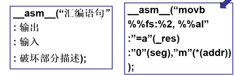</p>
<p>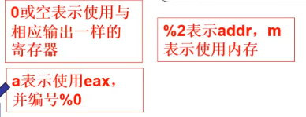</p>
<h3 id="after-page-tables-设置页表之后"><a href="#after-page-tables-设置页表之后" class="headerlink" title="after_page_tables    //设置页表之后"></a>after_page_tables    //设置页表之后</h3><ul>
<li><p>setup是进入保护模式，head是进入之后的初始化</p>
<figure class="highlight plaintext"><table><tr><td class="gutter"><pre><span class="line">1</span><br><span class="line">2</span><br><span class="line">3</span><br><span class="line">4</span><br><span class="line">5</span><br><span class="line">6</span><br><span class="line">7</span><br><span class="line">8</span><br><span class="line">9</span><br><span class="line">10</span><br><span class="line">11</span><br></pre></td><td class="code"><pre><span class="line">after_page_tables:</span><br><span class="line">	pushl $0</span><br><span class="line">	pushl $0</span><br><span class="line">	pushl $0</span><br><span class="line">	pushl $L6</span><br><span class="line">	//压栈</span><br><span class="line">	pushl $_main//将_main压入栈中</span><br><span class="line">	jmp set_paging</span><br><span class="line">L6:</span><br><span class="line">	jmp	L6//main返回时死循环，死机。</span><br><span class="line">setup_paging: 设置页表 ret</span><br></pre></td></tr></table></figure>

<p>setup_paging执行ret后，会执行main.c。</p>
<p>从汇编跳到执行C函数，和函数跳转一样。</p>
</li>
</ul>
<p>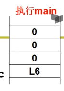</p>
<p>三个参数分别为envp,argv,argc，此处都是0。</p>
<p>此处的main只保留了传统的形式和命名。</p>
<p>main的工作就是xx_init:内存、中断、设备、时钟、CPU等内容的初始化。</p>
<figure class="highlight c"><table><tr><td class="gutter"><pre><span class="line">1</span><br><span class="line">2</span><br><span class="line">3</span><br><span class="line">4</span><br><span class="line">5</span><br><span class="line">6</span><br><span class="line">7</span><br><span class="line">8</span><br><span class="line">9</span><br><span class="line">10</span><br><span class="line">11</span><br><span class="line">12</span><br><span class="line">13</span><br><span class="line">14</span><br><span class="line">15</span><br><span class="line">16</span><br></pre></td><td class="code"><pre><span class="line"><span class="function"><span class="keyword">void</span> <span class="title">main</span><span class="params">(<span class="keyword">void</span>)</span></span></span><br><span class="line"><span class="function"></span>&#123;</span><br><span class="line">    mem_init();</span><br><span class="line">    trap_init();</span><br><span class="line">    blk_dev_init();</span><br><span class="line">    chr_dev_init();</span><br><span class="line">    tty_init();</span><br><span class="line">    time_init();</span><br><span class="line">    sched_init();</span><br><span class="line">    buffer_init();</span><br><span class="line">    hd_init();</span><br><span class="line">    floppy_init();</span><br><span class="line">    sti();</span><br><span class="line">    move_to_user_mode();</span><br><span class="line">    <span class="keyword">if</span>(!fork())&#123;init();&#125;</span><br><span class="line">&#125;</span><br></pre></td></tr></table></figure>

<h3 id="看一看mem-init…可以在视图菜单中关闭"><a href="#看一看mem-init…可以在视图菜单中关闭" class="headerlink" title="看一看mem_init…可以在视图菜单中关闭"></a>看一看mem_init…可以在<code>视图</code>菜单中关闭</h3><p>执行内存的初始化。</p>
<p>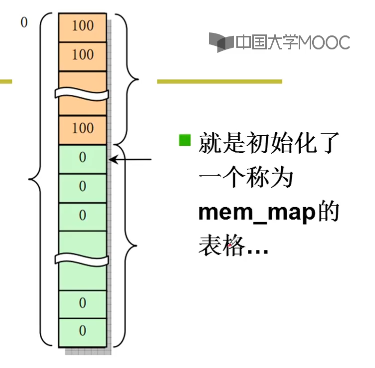</p>
<figure class="highlight c"><table><tr><td class="gutter"><pre><span class="line">1</span><br><span class="line">2</span><br><span class="line">3</span><br><span class="line">4</span><br><span class="line">5</span><br><span class="line">6</span><br><span class="line">7</span><br><span class="line">8</span><br><span class="line">9</span><br><span class="line">10</span><br><span class="line">11</span><br></pre></td><td class="code"><pre><span class="line"><span class="function"><span class="keyword">void</span> <span class="title">mem_init</span><span class="params">(<span class="keyword">long</span> start_mem,<span class="keyword">long</span> end_mem)</span></span></span><br><span class="line"><span class="function"></span>&#123;</span><br><span class="line">    <span class="keyword">int</span> i;</span><br><span class="line">    <span class="keyword">for</span>(i=<span class="number">0</span>;i&lt;PAGING_PAGS;i++)<span class="comment">//操作系统是使用着的</span></span><br><span class="line">        mem_map[i]=USED;</span><br><span class="line">    i=MAP_NR(start_mem);</span><br><span class="line">    end_mem-=start_mem;</span><br><span class="line">    end_mem&gt;&gt;=<span class="number">12</span>;	<span class="comment">//4k</span></span><br><span class="line">    <span class="keyword">while</span>(end_mem --&gt;<span class="number">0</span>)</span><br><span class="line">        mem_map[i++]=<span class="number">0</span>;<span class="comment">//每4k大小的区域放在一起置为0</span></span><br><span class="line">&#125;</span><br></pre></td></tr></table></figure>

<h2 id="操作系统接口"><a href="#操作系统接口" class="headerlink" title="操作系统接口"></a>操作系统接口</h2><h3 id="接口（Interface）"><a href="#接口（Interface）" class="headerlink" title="接口（Interface）"></a>接口（Interface）</h3><ul>
<li>连接两个东西、信号转换、屏蔽细节</li>
</ul>
<h4 id="什么是操作系统接口？"><a href="#什么是操作系统接口？" class="headerlink" title="什么是操作系统接口？"></a>什么是操作系统接口？</h4><p>连接上层用户和操作系统软件。</p>
<h5 id="命令行？"><a href="#命令行？" class="headerlink" title="命令行？"></a>命令行？</h5><p>命令：一段程序，shell也是一段程序。</p>
<p></p>
<p>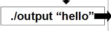</p>
<p></p>
<h5 id="图形按钮？"><a href="#图形按钮？" class="headerlink" title="图形按钮？"></a>图形按钮？</h5><ul>
<li>鼠标点击、键盘按下后</li>
</ul>
<p></p>
<p>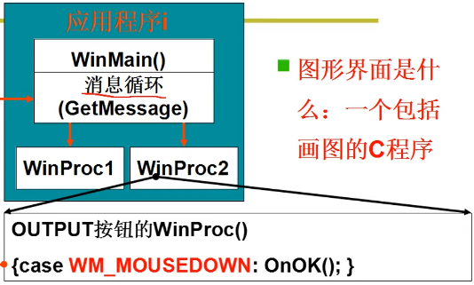</p>
<p></p>
<h5 id="操作系统接口-1"><a href="#操作系统接口-1" class="headerlink" title="操作系统接口"></a>操作系统接口</h5><p>通过C语言程序，连接操作系统和应用软件。</p>
<p>接口表现为函数调用，又由系统提供，所以称为系统调用。</p>
<h3 id="系统调用"><a href="#系统调用" class="headerlink" title="系统调用"></a>系统调用</h3><ul>
<li>POSIX：Portable Operating System Interface of Unix（IEEE制定的一个标准族）</li>
</ul>
<p></p>
<h2 id="系统调用的实现"><a href="#系统调用的实现" class="headerlink" title="系统调用的实现"></a>系统调用的实现</h2><figure class="highlight c"><table><tr><td class="gutter"><pre><span class="line">1</span><br><span class="line">2</span><br><span class="line">3</span><br><span class="line">4</span><br><span class="line">5</span><br><span class="line">6</span><br></pre></td><td class="code"><pre><span class="line">main()&#123;whoami();&#125;</span><br><span class="line">whoami()</span><br><span class="line">&#123;</span><br><span class="line">    <span class="built_in">printf</span>(<span class="number">100</span>,<span class="number">8</span>);</span><br><span class="line">&#125;</span><br><span class="line"><span class="number">100</span>:<span class="string">&quot;lizhijun&quot;</span></span><br></pre></td></tr></table></figure>

<p>应用程序为什么不能直接jmp到操作系统中执行函数？</p>
<p>不允许，会有安全问题。</p>
<h3 id="内核（用户）态，内核（用户）段"><a href="#内核（用户）态，内核（用户）段" class="headerlink" title="内核（用户）态，内核（用户）段"></a>内核（用户）态，内核（用户）段</h3><ul>
<li><p>将内核程序和用户程序隔离</p>
<ul>
<li><p>区分内核态和用户态：通过一种处理器的硬件设计。</p>
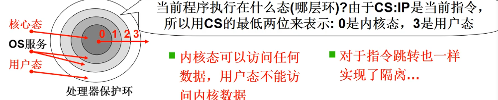</li>
<li><p></p>
</li>
<li><p>DPL用于描述目标内存段的特权级别（GDT中），CPL（当前的特权级，取决于执行的指令）</p>
</li>
</ul>
</li>
</ul>
<h3 id="硬件提供了“主动进入内核的唯一方法”"><a href="#硬件提供了“主动进入内核的唯一方法”" class="headerlink" title="硬件提供了“主动进入内核的唯一方法”"></a>硬件提供了“主动进入内核的唯一方法”</h3><ul>
<li>int指令将使CS中的CPL改为0，“进入内核”</li>
<li>这是用户程序发起调用内核代码的唯一方式</li>
<li>系统调用的核心：<ol>
<li>用户程序中包含一段包含int指令的代码</li>
<li>操作系统写中断处理，获取想调程序的编号</li>
<li>操作系统根据编号执行相应代码</li>
</ol>
</li>
</ul>
<h3 id="实现"><a href="#实现" class="headerlink" title="实现"></a>实现</h3><p>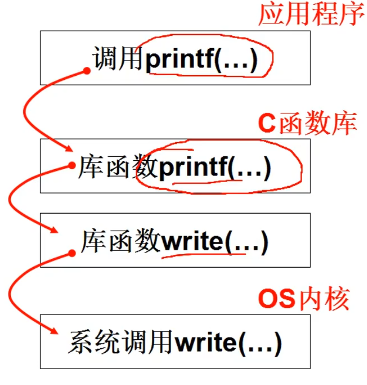</p>
<ul>
<li><p>最终展开成包含int指令的代码… </p>
<p>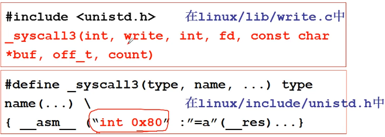</p>
</li>
</ul>
<h3 id="Write实现"><a href="#Write实现" class="headerlink" title="Write实现"></a>Write实现</h3><p>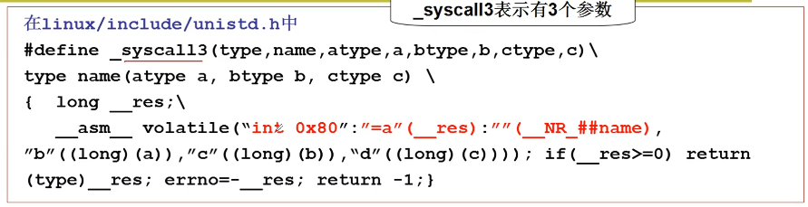</p>
<p>先int 0x80，调用0x80号中断，再把_NR_write(4)赋给eax，eax又赋给了__res作为返回值。最后把a赋给ebx，把b赋给ecx,把c赋给edx。</p>
<p>NR_write是系统调用号，放在eax中。</p>
<p>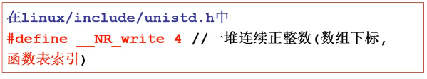</p>
<h3 id="int-0x80中断的处理"><a href="#int-0x80中断的处理" class="headerlink" title="int 0x80中断的处理"></a>int 0x80中断的处理</h3><p>通过IDT表来找到中断处理函数。</p>
<ul>
<li>显然，set_system_gate用来设置0x80的中断处理</li>
</ul>
<figure class="highlight c"><table><tr><td class="gutter"><pre><span class="line">1</span><br><span class="line">2</span><br><span class="line">3</span><br><span class="line">4</span><br><span class="line">5</span><br><span class="line">6</span><br><span class="line">7</span><br><span class="line">8</span><br><span class="line">9</span><br><span class="line">10</span><br><span class="line">11</span><br><span class="line">12</span><br><span class="line">13</span><br></pre></td><td class="code"><pre><span class="line"><span class="function"><span class="keyword">void</span> <span class="title">sched_init</span><span class="params">(<span class="keyword">void</span>)</span></span></span><br><span class="line"><span class="function"></span>&#123;	set_system_gate(<span class="number">0x80</span>,&amp;system_call)&#125;<span class="comment">//中断处理门</span></span><br><span class="line"><span class="comment">//遇到0x80中断，就跳到system_call的中断处理函数</span></span><br><span class="line"><span class="meta">#<span class="meta-keyword">define</span> set_system_gate(n,addr)	<span class="comment">//第n号中断对应处理函数入口点偏移地址addr</span></span></span><br><span class="line">_set_gate(&amp;idt[n],<span class="number">15</span>,<span class="number">3</span>,addr);<span class="comment">//idt是中断向量表基址</span></span><br><span class="line"><span class="meta">#<span class="meta-keyword">define</span> _set_gate(gate_addr, type, dpl, addr)</span></span><br><span class="line">_asm_(</span><br><span class="line">    <span class="string">&quot;movw %%dx,%%ax\n\t&quot;</span> <span class="string">&quot;movw %0,%%dx\n\t&quot;</span></span><br><span class="line">    <span class="string">&quot;movl %%eax, %1\n\t&quot;</span> <span class="string">&quot;movl %%edx, %2&quot;</span>:</span><br><span class="line">     :<span class="string">&quot;i&quot;</span>((<span class="keyword">short</span>)(<span class="number">0x8000</span>+(dpl&lt;&lt;<span class="number">13</span>)+type&lt;&lt;<span class="number">8</span>))</span><br><span class="line">	),<span class="string">&quot;o&quot;</span>(*((<span class="keyword">char</span>*)(gate_addr))),</span><br><span class="line">	<span class="string">&quot;o&quot;</span>(*(<span class="number">4</span>+(<span class="keyword">char</span>*)(gate_addr))),</span><br><span class="line">	<span class="string">&quot;d&quot;</span>((<span class="keyword">char</span>*)(addr),<span class="string">&quot;a&quot;</span>(<span class="number">0x00080000</span>))</span><br></pre></td></tr></table></figure>

<p></p>
<p>段选择符0x8000,处理函数入口点偏移&amp;system_call。</p>
<p>cs=8，ip=&amp;system_call</p>
<p>cpl是cs最后两位，cpl=00</p>
<h3 id="中断处理程序：system"><a href="#中断处理程序：system" class="headerlink" title="中断处理程序：system"></a>中断处理程序：system</h3><figure class="highlight plaintext"><table><tr><td class="gutter"><pre><span class="line">1</span><br><span class="line">2</span><br><span class="line">3</span><br><span class="line">4</span><br><span class="line">5</span><br><span class="line">6</span><br><span class="line">7</span><br><span class="line">8</span><br><span class="line">9</span><br><span class="line">10</span><br><span class="line">11</span><br><span class="line">12</span><br><span class="line">13</span><br><span class="line">14</span><br><span class="line">15</span><br><span class="line">16</span><br><span class="line">17</span><br><span class="line">18</span><br><span class="line">19</span><br><span class="line">20</span><br><span class="line">21</span><br><span class="line">22</span><br><span class="line">23</span><br><span class="line">24</span><br><span class="line">25</span><br><span class="line">26</span><br><span class="line">27</span><br><span class="line">28</span><br><span class="line">29</span><br><span class="line">30</span><br></pre></td><td class="code"><pre><span class="line">nr_system_call=72</span><br><span class="line">.globl _system_call</span><br><span class="line">_system_call:</span><br><span class="line">	cmpl $nr_system_call-1,%eax	</span><br><span class="line">	//eax存放的是系统调用号</span><br><span class="line">	//eax=nr_write,系统调用号</span><br><span class="line">	ja bad_sys_call</span><br><span class="line">	push %ds</span><br><span class="line">	push %es</span><br><span class="line">	push %fs</span><br><span class="line">	</span><br><span class="line">	pushl %edx</span><br><span class="line">	pushl %ecx</span><br><span class="line">	pushl %ebx</span><br><span class="line">	//调用的参数</span><br><span class="line">	movl $0x10,%edx</span><br><span class="line">	mov %dx,%ds</span><br><span class="line">	mov %dx,%es</span><br><span class="line">	//内核数据</span><br><span class="line">	movl $0x17,%edx</span><br><span class="line">	mov %dx,fs</span><br><span class="line">	//fs可以找到用户数据</span><br><span class="line">	call _sys_call_table(,%eax,4)</span><br><span class="line">	//_sys_call_table+4*eax就是相应系统调用处理函数入口</span><br><span class="line">	//这里乘4是因为这个表里每一项都是一个函数地址4个字节</span><br><span class="line">	pushl %eax</span><br><span class="line">	//返回值压栈，留着ret_from_sys_call时用</span><br><span class="line">	...</span><br><span class="line">ret_from_sys_call:</span><br><span class="line">	popl %eax,其他pop,iret</span><br></pre></td></tr></table></figure>

<h3 id="sys-call-table"><a href="#sys-call-table" class="headerlink" title="_sys_call_table"></a>_sys_call_table</h3><figure class="highlight c"><table><tr><td class="gutter"><pre><span class="line">1</span><br><span class="line">2</span><br><span class="line">3</span><br><span class="line">4</span><br><span class="line">5</span><br></pre></td><td class="code"><pre><span class="line">fn_ptr_call_table[]=</span><br><span class="line">&#123;</span><br><span class="line">    sys_setup,sys_exit,sys_fork,sys_read,sys_write,</span><br><span class="line">    ...</span><br><span class="line">&#125;</span><br></pre></td></tr></table></figure>

<p>call _sys_call_table(,%eax,4)依据上表就是call sys_write</p>
<p></p>
<h3 id="总结"><a href="#总结" class="headerlink" title="总结"></a>总结</h3><p></p>
<h2 id="操作系统历史"><a href="#操作系统历史" class="headerlink" title="操作系统历史"></a>操作系统历史</h2><h3 id="操作系统的开端"><a href="#操作系统的开端" class="headerlink" title="操作系统的开端"></a>操作系统的开端</h3><ul>
<li><p>（1955-1965）计算机非常昂贵，上古神机IBM7094,造价250万美元以上</p>
<ul>
<li>计算机使用原则：只专注于计算</li>
<li>批处理操作系统（Batch syste）</li>
<li>典型代表：<strong>IBSYS监控系统</strong></li>
</ul>
<p>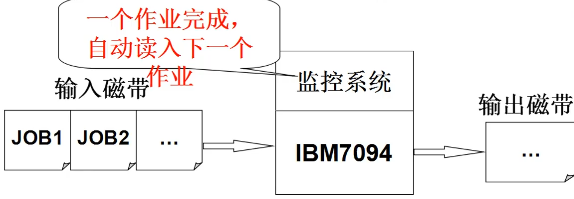</p>
</li>
<li><p>计算机开始进入多个行业：科学计算（IBM 7094）,银行（IBM1401）</p>
<ul>
<li>需要一台计算机干多个事情</li>
<li>多道程序：在计算机内存中同时存放几道相互独立的程序，使它们在管理程序控制下，相互穿插运行，两个或两个以上程序在计算机系统中同处于开始到结束之间的状态, 这些程序共享计算机系统资源。</li>
<li>作业之间的切换和调度成为核心：因为既有IO认为，又有计算任务，需要让CPU忙碌，例如：读写磁盘时不让CPU闲置，执行下一任务，等读写结束，回到上一任务。<strong>多进程结构和进程管理萌芽。</strong></li>
<li>典型代表：<strong>IBM OS/360</strong>（360待变全方位服务），开发周期5000个人年</li>
</ul>
</li>
<li><p>计算机进入多个行业，使用人数增加</p>
<ul>
<li>如果每个人启动一个作业，作业之间快速切换</li>
<li>分时系统：分时操作系统将系统<a target="_blank" rel="noopener" href="https://baike.baidu.com/item/%E5%A4%84%E7%90%86%E6%9C%BA/128842">处理机</a>时间与内存空间按一定的时间间隔，轮流地切换给各终端用户的程序使用。由于时间间隔很短，每个用户的感觉就像他独占计算机一样。</li>
<li>代表：MIT MULTICS</li>
<li>核心仍然是任务切换，但是资源复用的思想对操作系统影响很大，虚拟内存就是一种复用。</li>
</ul>
</li>
<li><p>小型计算机出现，PDP-1每台售价120000美元</p>
<ul>
<li>越来越多的人可以使用计算机</li>
<li>1969年：贝尔实验室的Ken Thompson、Dennis Ritchi等在一台没人使用的PDP-7上开发了一个简化的MULTICS，就是后来的UNIX。</li>
</ul>
</li>
<li><p>1981，IBM推出IBM PC。个人计算机开始普及</p>
<ul>
<li>很多人可以用计算机并接触UNIX</li>
<li>1987年Andrew Tanenbaum发布了MINIX用于教学</li>
<li>Linus Torvalds在386sx兼容微机上学习minix，做出了小Linux于1991年发布</li>
<li>1994年，Linux1.0发布并采用GPL协议，1998年以后互联网世界开展了一场Linux产业化运动</li>
</ul>
</li>
</ul>
<h4 id="核心思想、技术："><a href="#核心思想、技术：" class="headerlink" title="核心思想、技术："></a>核心思想、技术：</h4><ol>
<li>用户通过执行程序来使用计算机（与冯诺依曼的思想吻合）</li>
<li>作为管理者，操作系统要让多个程序合理推进，就是<strong>进程管理</strong></li>
<li>多进程（用户）推进时需要内存复用</li>
<li>等等…</li>
</ol>
<p>多进程结构是操作系统基本图谱。</p>
<h3 id="PC与DOS"><a href="#PC与DOS" class="headerlink" title="PC与DOS"></a>PC与DOS</h3><ul>
<li>PC机的诞生一定会导致百花齐放。IBM推出PC，自然要给机器配一个操作系统<ul>
<li>1975年Digital Research为Altair 8800开发了操作系统CP/M</li>
<li>CP/M：写命令给用户用，执行命令对应的程序，单任务执行</li>
<li>1980出现了8086 16位芯片，在CP/M基础上开发了QDOS</li>
</ul>
</li>
<li>Bill Gates进入历史舞台<ul>
<li>1975年与Paul Allen为Altair 8800开发了BASIC解释器，开创了微软</li>
<li>1977年开发FAT管理磁盘</li>
<li>QDOS的成功在于以CP/M为基础将BASIC和FAT包含了进来<ul>
<li>文件管理和编程环境都是用户所关心的。</li>
</ul>
</li>
<li>1981年微软买下了QDOS，改名为MS-DOS，与IBM PC打包出售</li>
</ul>
</li>
</ul>
<h4 id="从MS-DOS到Windows"><a href="#从MS-DOS到Windows" class="headerlink" title="从MS-DOS到Windows"></a>从MS-DOS到Windows</h4><ul>
<li>MS-DOS的磁盘、文件、命令让用起来更方便，但可以更方便<ul>
<li>1989，MS-DOS4.0出现，支持了鼠标和键盘</li>
<li>Windows3.0大获成功</li>
<li>之后出现了95，XP，Vista，Win 7。。。</li>
<li>文件、开发环境、图形界面对于OS的重要性</li>
</ul>
</li>
</ul>
<h4 id="核心思想、技术：-1"><a href="#核心思想、技术：-1" class="headerlink" title="核心思想、技术："></a>核心思想、技术：</h4><ol>
<li>仍然是程序执行、多进程、程序带动其他设备使用的基本结构</li>
<li>开始重视用户的体验：各种文件、编程环境、图形界面</li>
</ol>
 
      <!-- reward -->
      
    </div>
    

    <!-- copyright -->
    
    <div class="declare">
      <ul class="post-copyright">
        <li>
          <i class="ri-copyright-line"></i>
          <strong>Copyright： </strong>
          
          Copyright is owned by the author. For commercial reprints, please contact the author for authorization. For non-commercial reprints, please indicate the source.
          
        </li>
      </ul>
    </div>
    
    <footer class="article-footer">
       
<div class="share-btn">
      <span class="share-sns share-outer">
        <i class="ri-share-forward-line"></i>
        分享
      </span>
      <div class="share-wrap">
        <i class="arrow"></i>
        <div class="share-icons">
          
          <a class="weibo share-sns" href="javascript:;" data-type="weibo">
            <i class="ri-weibo-fill"></i>
          </a>
          <a class="weixin share-sns wxFab" href="javascript:;" data-type="weixin">
            <i class="ri-wechat-fill"></i>
          </a>
          <a class="qq share-sns" href="javascript:;" data-type="qq">
            <i class="ri-qq-fill"></i>
          </a>
          <a class="douban share-sns" href="javascript:;" data-type="douban">
            <i class="ri-douban-line"></i>
          </a>
          <!-- <a class="qzone share-sns" href="javascript:;" data-type="qzone">
            <i class="icon icon-qzone"></i>
          </a> -->
          
          <a class="facebook share-sns" href="javascript:;" data-type="facebook">
            <i class="ri-facebook-circle-fill"></i>
          </a>
          <a class="twitter share-sns" href="javascript:;" data-type="twitter">
            <i class="ri-twitter-fill"></i>
          </a>
          <a class="google share-sns" href="javascript:;" data-type="google">
            <i class="ri-google-fill"></i>
          </a>
        </div>
      </div>
</div>

<div class="wx-share-modal">
    <a class="modal-close" href="javascript:;"><i class="ri-close-circle-line"></i></a>
    <p>扫一扫，分享到微信</p>
    <div class="wx-qrcode">
      
    </div>
</div>

<div id="share-mask"></div>  
    </footer>
  </div>

   
  <nav class="article-nav">
    
      <a href="/2021/09/05/%E8%BF%9B%E7%A8%8B%E7%AE%A1%E7%90%86/" class="article-nav-link">
        <strong class="article-nav-caption">上一篇</strong>
        <div class="article-nav-title">
          
            进程管理
          
        </div>
      </a>
    
    
      <a href="/2021/07/04/%E6%B7%B1%E5%85%A5%E7%90%86%E8%A7%A3%E8%AE%A1%E7%AE%97%E6%9C%BA%E7%B3%BB%E7%BB%9F%E4%B8%89/" class="article-nav-link">
        <strong class="article-nav-caption">下一篇</strong>
        <div class="article-nav-title">深入理解计算机系统三</div>
      </a>
    
  </nav>

   
 
   
     
</article>

</section>
      <footer class="footer">
  <div class="outer">
    <ul>
      <li>
        Copyrights &copy;
        2020-2021
        <i class="ri-heart-fill heart_icon"></i> YYz
      </li>
    </ul>
    <ul>
      <li>
        
      </li>
    </ul>
    <ul>
      <li>
        
        
        <span>
  <span><i class="ri-user-3-fill"></i>Visitors:<span id="busuanzi_value_site_uv"></span></span>
  <span class="division">|</span>
  <span><i class="ri-eye-fill"></i>Views:<span id="busuanzi_value_page_pv"></span></span>
</span>
        
      </li>
    </ul>
    <ul>
      
    </ul>
    <ul>
      
    </ul>
    <ul>
      <li>
        <!-- cnzz统计 -->
        
      </li>
    </ul>
  </div>
</footer>    
    </main>
    <div class="float_btns">
      <div class="totop" id="totop">
  <i class="ri-arrow-up-line"></i>
</div>

<div class="todark" id="todark">
  <i class="ri-moon-line"></i>
</div>

    </div>
    <aside class="sidebar on">
      <button class="navbar-toggle"></button>
<nav class="navbar">
  
  <div class="logo">
    <a href="/"></a>
  </div>
  
  <ul class="nav nav-main">
    
    <li class="nav-item">
      <a class="nav-item-link" href="/">主页</a>
    </li>
    
    <li class="nav-item">
      <a class="nav-item-link" href="/archives">归档</a>
    </li>
    
    <li class="nav-item">
      <a class="nav-item-link" href="/categories">分类</a>
    </li>
    
  </ul>
</nav>
<nav class="navbar navbar-bottom">
  <ul class="nav">
    <li class="nav-item">
      
      <a class="nav-item-link nav-item-search"  title="Search">
        <i class="ri-search-line"></i>
      </a>
      
      
    </li>
  </ul>
</nav>
<div class="search-form-wrap">
  <div class="local-search local-search-plugin">
  <input type="search" id="local-search-input" class="local-search-input" placeholder="Search...">
  <div id="local-search-result" class="local-search-result"></div>
</div>
</div>
    </aside>
    <div id="mask"></div>

<!-- #reward -->
<div id="reward">
  <span class="close"><i class="ri-close-line"></i></span>
  <p class="reward-p"><i class="ri-cup-line"></i>请我喝杯咖啡吧~</p>
  <div class="reward-box">
    
    <div class="reward-item">
      
      <span class="reward-type">支付宝</span>
    </div>
    
    
    <div class="reward-item">
      
      <span class="reward-type">微信</span>
    </div>
    
  </div>
</div>
    
<script src="/js/jquery-3.6.0.min.js"></script>
 
<script src="/js/lazyload.min.js"></script>

<!-- Tocbot -->
 
<script src="/js/tocbot.min.js"></script>

<script>
  tocbot.init({
    tocSelector: ".tocbot",
    contentSelector: ".article-entry",
    headingSelector: "h1, h2, h3, h4, h5, h6",
    hasInnerContainers: true,
    scrollSmooth: true,
    scrollContainer: "main",
    positionFixedSelector: ".tocbot",
    positionFixedClass: "is-position-fixed",
    fixedSidebarOffset: "auto",
  });
</script>

<script src="https://cdn.jsdelivr.net/npm/jquery-modal@0.9.2/jquery.modal.min.js"></script>
<link
  rel="stylesheet"
  href="https://cdn.jsdelivr.net/npm/jquery-modal@0.9.2/jquery.modal.min.css"
/>
<script src="https://cdn.jsdelivr.net/npm/justifiedGallery@3.7.0/dist/js/jquery.justifiedGallery.min.js"></script>

<script src="/dist/main.js"></script>

<!-- ImageViewer -->
 <!-- Root element of PhotoSwipe. Must have class pswp. -->
<div class="pswp" tabindex="-1" role="dialog" aria-hidden="true">

    <!-- Background of PhotoSwipe. 
         It's a separate element as animating opacity is faster than rgba(). -->
    <div class="pswp__bg"></div>

    <!-- Slides wrapper with overflow:hidden. -->
    <div class="pswp__scroll-wrap">

        <!-- Container that holds slides. 
            PhotoSwipe keeps only 3 of them in the DOM to save memory.
            Don't modify these 3 pswp__item elements, data is added later on. -->
        <div class="pswp__container">
            <div class="pswp__item"></div>
            <div class="pswp__item"></div>
            <div class="pswp__item"></div>
        </div>

        <!-- Default (PhotoSwipeUI_Default) interface on top of sliding area. Can be changed. -->
        <div class="pswp__ui pswp__ui--hidden">

            <div class="pswp__top-bar">

                <!--  Controls are self-explanatory. Order can be changed. -->

                <div class="pswp__counter"></div>

                <button class="pswp__button pswp__button--close" title="Close (Esc)"></button>

                <button class="pswp__button pswp__button--share" style="display:none" title="Share"></button>

                <button class="pswp__button pswp__button--fs" title="Toggle fullscreen"></button>

                <button class="pswp__button pswp__button--zoom" title="Zoom in/out"></button>

                <!-- Preloader demo http://codepen.io/dimsemenov/pen/yyBWoR -->
                <!-- element will get class pswp__preloader--active when preloader is running -->
                <div class="pswp__preloader">
                    <div class="pswp__preloader__icn">
                        <div class="pswp__preloader__cut">
                            <div class="pswp__preloader__donut"></div>
                        </div>
                    </div>
                </div>
            </div>

            <div class="pswp__share-modal pswp__share-modal--hidden pswp__single-tap">
                <div class="pswp__share-tooltip"></div>
            </div>

            <button class="pswp__button pswp__button--arrow--left" title="Previous (arrow left)">
            </button>

            <button class="pswp__button pswp__button--arrow--right" title="Next (arrow right)">
            </button>

            <div class="pswp__caption">
                <div class="pswp__caption__center"></div>
            </div>

        </div>

    </div>

</div>

<link rel="stylesheet" href="https://cdn.jsdelivr.net/npm/photoswipe@4.1.3/dist/photoswipe.min.css">
<link rel="stylesheet" href="https://cdn.jsdelivr.net/npm/photoswipe@4.1.3/dist/default-skin/default-skin.min.css">
<script src="https://cdn.jsdelivr.net/npm/photoswipe@4.1.3/dist/photoswipe.min.js"></script>
<script src="https://cdn.jsdelivr.net/npm/photoswipe@4.1.3/dist/photoswipe-ui-default.min.js"></script>

<script>
    function viewer_init() {
        let pswpElement = document.querySelectorAll('.pswp')[0];
        let $imgArr = document.querySelectorAll(('.article-entry img:not(.reward-img)'))

        $imgArr.forEach(($em, i) => {
            $em.onclick = () => {
                // slider展开状态
                // todo: 这样不好，后面改成状态
                if (document.querySelector('.left-col.show')) return
                let items = []
                $imgArr.forEach(($em2, i2) => {
                    let img = $em2.getAttribute('data-idx', i2)
                    let src = $em2.getAttribute('data-target') || $em2.getAttribute('src')
                    let title = $em2.getAttribute('alt')
                    // 获得原图尺寸
                    const image = new Image()
                    image.src = src
                    items.push({
                        src: src,
                        w: image.width || $em2.width,
                        h: image.height || $em2.height,
                        title: title
                    })
                })
                var gallery = new PhotoSwipe(pswpElement, PhotoSwipeUI_Default, items, {
                    index: parseInt(i)
                });
                gallery.init()
            }
        })
    }
    viewer_init()
</script> 
<!-- MathJax -->

<!-- Katex -->

<!-- busuanzi  -->
 
<script src="/js/busuanzi-2.3.pure.min.js"></script>
 
<!-- ClickLove -->

<!-- ClickBoom1 -->

<!-- ClickBoom2 -->
 
<script src="/js/clickBoom2.js"></script>
 
<!-- CodeCopy -->
 
<link rel="stylesheet" href="/css/clipboard.css">
 <script src="https://cdn.jsdelivr.net/npm/clipboard@2/dist/clipboard.min.js"></script>
<script>
  function wait(callback, seconds) {
    var timelag = null;
    timelag = window.setTimeout(callback, seconds);
  }
  !function (e, t, a) {
    var initCopyCode = function(){
      var copyHtml = '';
      copyHtml += '<button class="btn-copy" data-clipboard-snippet="">';
      copyHtml += '<i class="ri-file-copy-2-line"></i><span>COPY</span>';
      copyHtml += '</button>';
      $(".highlight .code pre").before(copyHtml);
      $(".article pre code").before(copyHtml);
      var clipboard = new ClipboardJS('.btn-copy', {
        target: function(trigger) {
          return trigger.nextElementSibling;
        }
      });
      clipboard.on('success', function(e) {
        let $btn = $(e.trigger);
        $btn.addClass('copied');
        let $icon = $($btn.find('i'));
        $icon.removeClass('ri-file-copy-2-line');
        $icon.addClass('ri-checkbox-circle-line');
        let $span = $($btn.find('span'));
        $span[0].innerText = 'COPIED';
        
        wait(function () { // 等待两秒钟后恢复
          $icon.removeClass('ri-checkbox-circle-line');
          $icon.addClass('ri-file-copy-2-line');
          $span[0].innerText = 'COPY';
        }, 2000);
      });
      clipboard.on('error', function(e) {
        e.clearSelection();
        let $btn = $(e.trigger);
        $btn.addClass('copy-failed');
        let $icon = $($btn.find('i'));
        $icon.removeClass('ri-file-copy-2-line');
        $icon.addClass('ri-time-line');
        let $span = $($btn.find('span'));
        $span[0].innerText = 'COPY FAILED';
        
        wait(function () { // 等待两秒钟后恢复
          $icon.removeClass('ri-time-line');
          $icon.addClass('ri-file-copy-2-line');
          $span[0].innerText = 'COPY';
        }, 2000);
      });
    }
    initCopyCode();
  }(window, document);
</script>
 
<!-- CanvasBackground -->
 
<script src="/js/dz.js"></script>
 
<script>
  if (window.mermaid) {
    mermaid.initialize({ theme: "forest" });
  }
</script>


    
    

  </div>
</body>

</html>